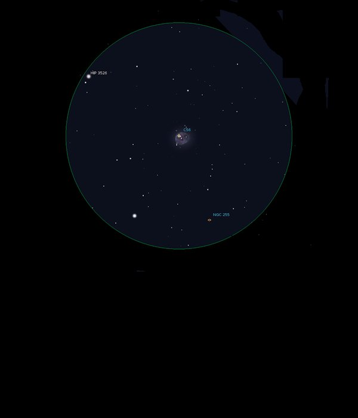

NGC 246
Planetary Nebula in Cetus
NGC 246
Mag 8.0
The Skull Nebula, The Pac Man Nebula, Caldwell 56
02/11/16
Goodness me,
for a Caldwell Object C56 is very, very faint indeed, although
it is low down through the rising mists!
No structure visible but quite interesting that there appear to
be three stars of Mag 11 or so embedded in it, although they are
probably sitting behind it
No sign of the Galaxy NGC 255 which is in the same 25mm FOV at
Mag 11.6
Tried 12mm and UHC filter on NGC 246 but not any better and the
three stars then disappeared